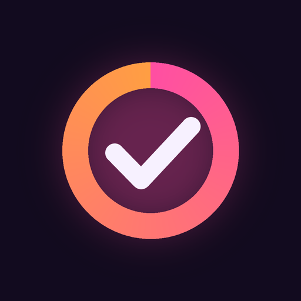

Game 100% tracker for Android
Check off every region, side activity, mission, collectible and car in your favorite open-world games. Pin what's next, add notes, and watch your percentage climb. Checklists update automatically as players discover new things.
Something missing or wrong in a checklist? Found a bug? Email hangrygrogu@gmail.com.
Hundo is an unofficial, fan-made app. Not affiliated with, endorsed or sponsored by Rockstar Games, Take-Two Interactive or any other game publisher. Game names are trademarks of their respective owners.